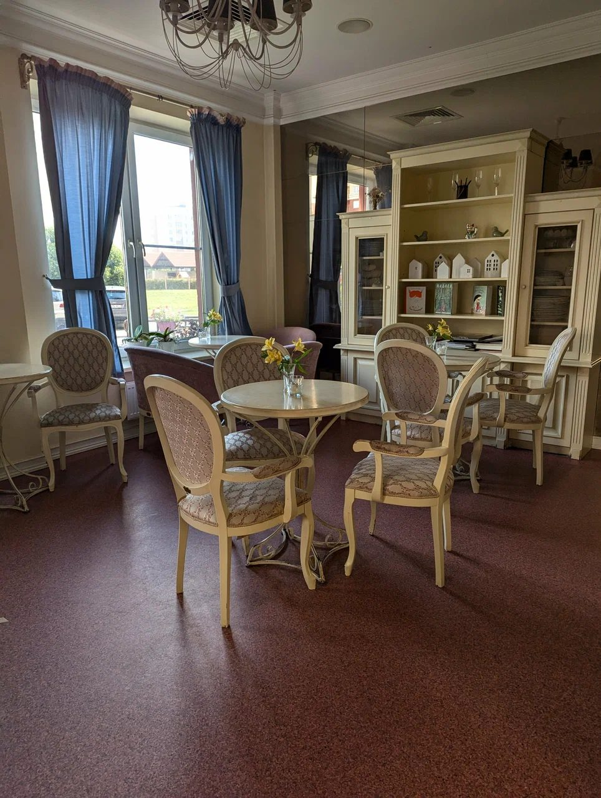
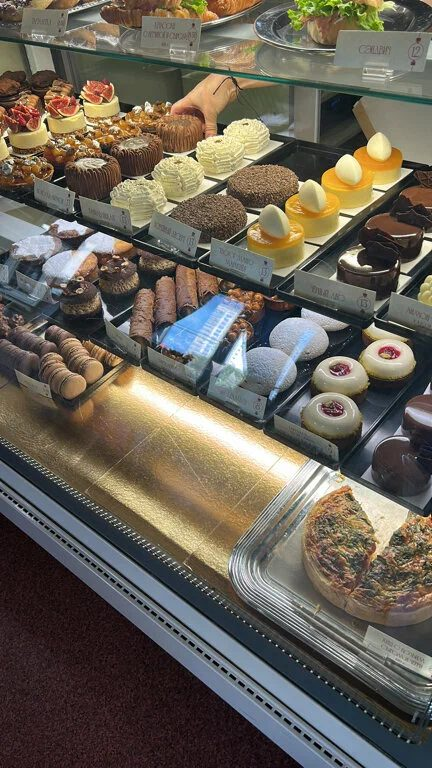

О нас
Кофе, десерты и немного Парижа
Мулен заметен издалека: красный дом, полосатый тент и вывеска с сердцем.

Под полосатым тентом
Вход со двора, у двери белые рамы, под окнами цветы, а рядом столик, за которым можно выпить кофе на воздухе.
Светлый зал
Высокие окна, синие шторы, кремовые стулья с узорной обивкой и круглые столики. В зале стоит белый буфет с фарфоровыми домиками и книгами.


Витрина
Тарталетки, пирожные с фисташкой и малиной, эклеры, макаронс и шоколадные десерты. Подходите, смотрите, выбирайте глазами.